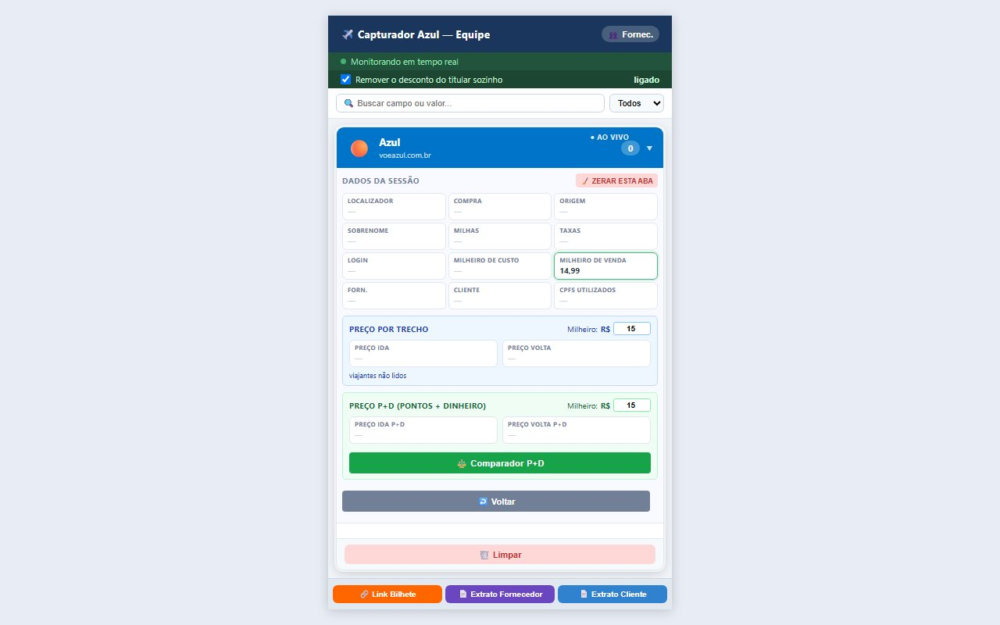
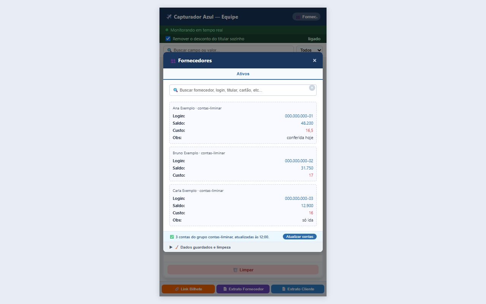

The extension Domus's ticketing team uses on the Azul website. It shows each person the accounts in their work group, records the points and fees of every flight search and prices each leg and the Points + Cash fare on the spot. It started as the Azul version of Capturador Smiles and became a team tool, with individual access.


Each person sees only their group's accounts: holder, login, balance, cost and notes. The list comes from the Domus service and refreshes with one click.
On the Azul website it reads the flight search and records the login used, the points and the fees, feeding the ticket reconciliation in the Domus dashboard.
Using the cost and sale price per thousand miles, it prices each leg and compares the points fare with the Points + Cash fare.
The extension is internal to Domus and the code is private. Screenshots use sample data.